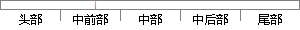

(2)无监督学习（Unsupervised Learning），常见算法有k-Means聚类算法；
片段位置图

相似结果|
1
原句片段：(2)无监督学习（Unsupervised Learning），常见算法有k-Means聚类算法；
相似片段 1：好举出常见的 有监督学习 和 无监督学习 的算法...是无监督学习(unsupervised learning)了,也即聚类(...在该簇上进行 K-Means 聚类,其中 计算将该簇一分...
相似片段 2：二、算法步骤 K-means算法是将样本聚类成k个簇(cluster),具体算法描述如下: ...,主要分为有监督学习(supervised learning)和无监督学习(unsupervised learning)。...
相似片段 3：无监督分类算法—K-Means 无监督学习(unsupervised learning) 没有已知标签的训练集,只给一堆数据集,通过学习去发现数据内在的性质及规律。 K-Means聚类算法步骤 ...
相似片段 4：K-means算法是非监督学习(unsupervised learning)中最简单也是最常用的一种聚类算法,具有的特点是: 对初始化敏感。初始点选择的不同,可能会产生不同的聚类结果 最终...
相似片段 5：K-means算法是非监督学习(unsupervised learning)中最简单也是最常用的一种聚类算法,具有的特点是: 对初始化敏感。初始点选择的不同,可能会产生不同的聚类结果 最终...
相似片段 6：Unsupervised Learning 特点 训练样本没有标签 应用...[2] 无监督学习常用算法 编辑 常用的无监督学习算法...典型的分割聚类算法有K-means算法, K-medoids算法、...
相似片段 7：除了最为简单的K-Means聚类算法外,较常见的...聚类属于无监督学习,k-means 算法是聚类中最简单...(1)到(2)比较直接,就是分子分母同乘以一个相等...
相似片段 8：聚类算法是一类非监督学习算法,在有监督学习中,学习的目标是要在两类样本中找出...如果将数据集分成两类,即k=2,K-means算法过程如下: 1、首先任意选取两个...
|
※ 片段修改建议 ※
近似词参考：- 监督：监视
- 学习：进修
系统自动生成语句：(2)无监视进修（Unsupervised Learning），常见算法有k-Means聚类算法；
注：本片段修改建议为系统自动生成，仅供参考。